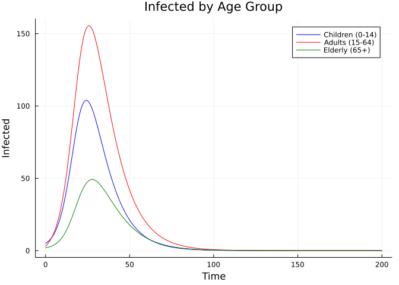
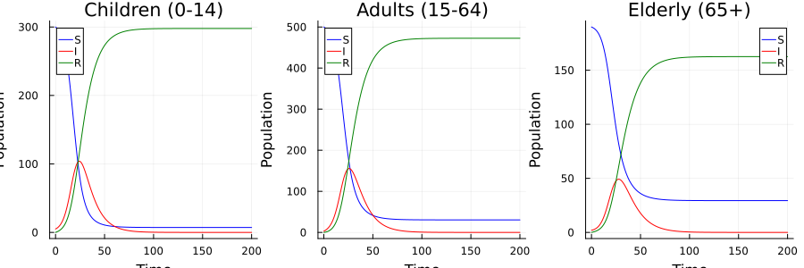

Age-Structured SIR with Arrays
Introduction
This vignette demonstrates how to use arrays for age-structured models. Arrays allow defining state variables and parameters indexed by age group.
Model Definition
We define an SIR model with age-specific transmission rates:
using Odin
using Plots
sir_age = @odin begin
n_age = parameter(3)
dim(S) = n_age
dim(I) = n_age
dim(R) = n_age
dim(beta) = n_age
dim(S0) = n_age
dim(I0) = n_age
deriv(S[i]) = -beta[i] * S[i] * total_I / N
deriv(I[i]) = beta[i] * S[i] * total_I / N - gamma * I[i]
deriv(R[i]) = gamma * I[i]
total_I = sum(I)
initial(S[i]) = S0[i]
initial(I[i]) = I0[i]
initial(R[i]) = 0
S0 = parameter()
I0 = parameter()
beta = parameter()
gamma = parameter(0.1)
N = parameter(1000)
endOdin.DustSystemGenerator{var"##OdinModel#277"}(var"##OdinModel#277"(0, [:S, :I, :R], [:n_age, :S0, :I0, :beta, :gamma, :N], true, false, false, false, false, Dict{Symbol, Array}()))Parameters
We set up three age groups: children (0-14), adults (15-64), and elderly (65+):
pars = (
n_age = 3.0,
S0 = [300.0, 500.0, 190.0], # initial susceptibles per age group
I0 = [5.0, 3.0, 2.0], # initial infected
beta = [0.4, 0.3, 0.2], # age-specific transmission rates
gamma = 0.1,
N = 1000.0,
)
times = collect(0.0:0.5:200.0)
result = simulate(sir_age, pars; times=times)
println("State shape: ", size(result))State shape: (9, 1, 401)Visualising by Age Group
age_labels = ["Children (0-14)" "Adults (15-64)" "Elderly (65+)"]
colors = [:blue :red :green]
# Infected by age group
p = plot(title="Infected by Age Group",
xlabel="Time", ylabel="Infected", linewidth=2)
for i in 1:3
plot!(p, times, result[3+i, 1, :], label=age_labels[i], color=colors[i])
end
p
# All compartments for each age group
ps = []
for g in 1:3
pg = plot(title=age_labels[g], xlabel="Time", ylabel="Population", linewidth=2)
plot!(pg, times, result[g, 1, :], label="S", color=:blue)
plot!(pg, times, result[3+g, 1, :], label="I", color=:red)
plot!(pg, times, result[6+g, 1, :], label="R", color=:green)
push!(ps, pg)
end
plot(ps..., layout=(1, 3), size=(900, 300))
Conservation Check
for t_idx in [1, length(times)]
total = sum(result[:, 1, t_idx])
println("Total at t=$(times[t_idx]): ", round(total, digits=6))
endTotal at t=0.0: 1000.0
Total at t=200.0: 1000.0Final Attack Rates by Age
for g in 1:3
R_final = result[6+g, 1, end]
N_group = pars.S0[g] + pars.I0[g]
ar = 100 * R_final / N_group
println("$(age_labels[g]): Attack rate = $(round(ar, digits=1))%")
endChildren (0-14): Attack rate = 97.6%
Adults (15-64): Attack rate = 93.9%
Elderly (65+): Attack rate = 84.7%